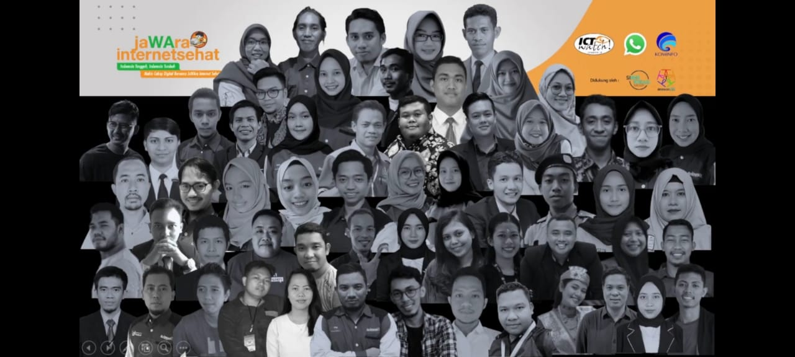

Andira DEC Pemuda Bengkalis dan 59 Aktivis Muda Indonesia Terpilih, Bersatu Gencarkan Edukasi Literasi Digital Melalui JaWAra Internet Sehat Bersama WhatsApp dan ICT Watch
JaWAra Internet Sehat-Youth Movement Digital Literacy Sabtu, 21 Agustus 2021
Bengkalis, 21 Agustus 2021 – Pandemi COVID-19 memberikan peluang sekaligus tantangan baru bagi masyarakat di dunia digital. Peluang muncul dengan peningkatan jumlah pengguna internet dan beragam penggunaan untuk berbagai macam aktivitas produktif, termasuk bekerja dan belajar. Akan tetapi hal ini juga beriringan dengan munculnya beragam tantangan, seperti makin maraknya dan berkembangnya berita dan informasi hoaks/disinformasi, khususnya terkait COVID-19 dan Vaksinasi serta tantangan terkait privasi dan data pribadi di internet dan era digital saat ini.
Agus Andira yang selalu disapa Andi ini, seorang pemuda dari Kabupaten Bengkalis Provinsi Riau dengan aktivitas keseharian sebagai pegiat digital dan mendedikasikan diri dalam pengabdian dibidang digital dan pendidikan, aktif di beberapa kegiatan Nasional dan Internasional dan mendirikan sebuah komunitas yang bergerak di isu digital dan pendidikan ini telah berhasil terpilih dan tergabung dalam sebuah program Nasional “JaWAra Internet Sehat-Youth Movement Digital Literacy “ sebuah Gerakan Edukasi Literasi Digital yang di inisiasi oleh ICT Wach dan WhatsApp dengan dukungan Kementerian Komunikasi dan Informatika Republik Indonesia setelah melalui tahapan seleksi administrasi dan wawancara di bulan juni yang lalu.
“Alhamdulillah, anugerah dari Allah SWT dan suatu kehormatan serta kebanggaan yang luar biasa buat saya terpilih dan diberikan kepercayaan dalam program ICT Watch dan WhatsApp dalam mendedikasikan diri untuk menjalankan program dan kegiatan Edukasi Literasi Digital yang menjadi urgensi dan program Pemerintah kita saat ini terkait tantangan-tantangan yang akan kita hadapi dan terus berkembang khususnya di era digital yang akan di impelementasikan untuk seluruh lapisan masyarakat, “ kata Andi.
“Insya Allah konsep dan program yang akan dijalankan, mengangkat 2 isu utama yang menjadi perbincangan dan tantangan kita terkait hoaks covid-19 dan vaksinasi serta tantangan yang berkaitan dengan keamanan privasi dan data pribadi di era digital saat ini. Saya juga sudah membangun komunikasi kepada mitra-mitra kegiatan di antaranya instansi pemerintahan, perguruan tinggi dan komunitas lokal dalam membangun kerjasama dan dukungan dalam melaksanakan dan menjalankan kegiatan ini. Hal ini sangat urgensi dan tanggungjawab kita bersama. kita butuh langkah yang tepat agar semua masyarakat terliterasi dan memiliki keterampilan serta awareness dalam menghadapi hal-hal yang negatif digital dan agar kita terhindar menjadi sasaran para pelaku cyber atau pihak-pihak yang tidak bertanggungjawab, “ lanjutnya.

Jakarta, 16 Agustus 2021 pukul 10.00 WIB, Peluncuran Program JaWAra Intenet Sehat oleh WhatsApp dan ICT Watch bersama Kementerian Komunikasi dan Informatika Republik Indonesia dan dihadiri beberapa Instansi Pemerintah Daerah dan komunitas lokal, Melanjutkan kolaborasinya dalam menggencarkan literasi digital di Indonesia melalui JaWAra Internet Sehat, gerakan edukasi akar rumput oleh anak muda di 28 provinsi Indonesia.
Turut hadir Kepala Dinas Komunikasi, Informatika dan Statistik Kabupaten Bengkalis di event lauching JaWAra Internet Sehat tersebut.
Program ini dibangun menyusul tingginya jumlah peredaran hoaks dan berbagai isu terkait literasi digital di tengah pandemi COVID-19 di Indonesia. Di masa pandemi ini, hoaks bisa berakibat fatal, contohnya banyak orang yang mempercayai berita bohong yang beredar di platform digital sehingga enggan untuk divaksinasi dan menjadi rentan terpapar ataupun mengalami sakit parah jika terinfeksi virus COVID-19.
Pada saat yang sama, masih ada kesenjangan literasi digital yang mencolok antar-generasi dan provinsi. Umumnya, anak muda lebih paham tentang dunia digital dibanding orang tua. Program JaWAra Internet Sehat diharapkan dapat berperan penting dengan menginisiasi dan melibatkan para aktivis muda di seantero Indonesia.
Manajer Program ICT Watch Indriyatno Banyumurti mengatakan, “Anak muda Indonesia memiliki literasi digital yang lebih baik dari generasi lainnya. Hal ini yang menjadi alasan mengapa kami bersama WhatsApp ingin mendorong anak muda dari berbagai daerah untuk dapat menjadi agen perubahan dalam meningkatkan literasi digital di ranah lokal, khususnya dalam menjaga keamanan digital dan melawan hoaks. Tentunya program ini tidak akan berjalan tanpa dukungan Kominfo, Siberkreasi, RelawanTIK, Pemerintah Daerah, institusi perguruan tinggi dan sekolah, serta mitra lainnya."
Program ini menggandeng 60 aktivis muda, juga disebut JaWAra Internet Sehat, untuk memprakarsai dan memfasilitasi kegiatan edukasi literasi digital di komunitas mereka masing-masing dengan dukungan dari ICT Watch dan WhatsApp terutama untuk mengatasi misinformasi dan isu-isu privasi.
Kegiatan-kegiatan edukasi lokal oleh para JaWAra Internet Sehat ini didukung untuk memberdayakan lebih dari 15.000 orang termasuk anak muda, orang tua, guru, pelajar, mahasiswa, komunitas, serta pelaku UKM di berbagai daerah.
Untuk mengumumkan dimulainya program ini, WhatsApp dan ICT Watch mengadakan talk show daring yang mengundang berbagai mitra kegiatan ini seperti dari Kementerian Komunikasi dan Informatika, mitra seperti Siberkreasi dan pemerintah daerah, serta para aktivis digital JaWAra Internet Sehat yang tergabung di program ini. Talk show ini terbuka untuk umum melalui platform live-streaming, serta terdiri dari enam segmen di mana masing-masing pembicara membahas literasi digital di Indonesia dan cara meningkatkannya bersama.
Kementerian Komunikasi dan Informatika percaya bahwa kolaborasi JaWAra Internet Sehat melengkapi program literasi digital yang telah diusung pemerintah dan akan berperan penting dalam memerangi misinformasi di era pandemi yang dapat berakibat fatal.
"Perubahan budaya masyarakat Indonesia yang lebih mobile first, membawa pada semakin banyaknya aktivitas masyarakat terjadi di dunia digital. Dampak negatifnya adalah masyarakat menjadi rentan terhadap konten-konten negatif yang beredar. Untuk itu kita perlu meningkatkan literasi digital masyarakat. Oleh karena itu, kami sangat mendukung dan mengapresiasi program JaWAra Internet Sehat yang diinisiasi oleh WhatsApp dan ICT Watch ini. Harapan kami, program ini dapat berkelanjutan agar dapat membantu mewujudkan masyarakat digital Indonesia,” Kata Direktur Jenderal Aplikasi Informatika Kementerian Komunikasi dan Informatika Semuel Abrijani Pangerapan.
Gerakan ini adalah bagian dari kemitraan literasi digital antara WhatsApp dan ICT Watch. Kegiatan-kegiatan yang pernah diadakan sebelumnya melingkupi roadshow, kelas daring, serial video, serta Podcast Internet Sehat, serial siniar yang membahas berbagai aspek keamanan dan literasi digital. Podcast Internet Sehat dapat Anda dengarkan di sini.
“Kami sangat senang dapat meluncurkan program JaWAra Internet Sehat sebagai bagian dari kolaborasi berkelanjutan kami dengan ICT Watch untuk mendukung upaya meningkatkan literasi digital masyarakat Indonesia oleh Kementerian Komunikasi dan Informatika. Ke depannya, kami berencana memberikan dukungan penuh untuk memerangi misinformasi dan menyebarkan kesadaran literasi digital. Kami harap banyak orang akan bergabung ke kegiatan-kegiatan yang diadakan di daerah mereka dan dapat belajar lebih banyak tentang melindungi keamanan digital,” kata Manajer Kebijakan Publik WhatsApp untuk Indonesia Esther Samboh.
...
Tentang WhatsApp
WhatsApp adalah aplikasi perpesanan privat yang sederhana, andal, dan aman. Lebih dari 2 miliar orang di lebih dari 180 negara menggunakan WhatsApp untuk tetap terhubung dengan teman dan keluarga, kapan pun dan di mana pun. WhatsApp tidak hanya menawarkan layanan tanpa biaya, tetapi juga tersedia di berbagai perangkat seluler dan dapat dijangkau di area dengan konektivitas rendah sekalipun. WhatsApp memudahkan pengguna untuk berbagi momen favorit, mengirimkan informasi penting, atau mengobrol dengan teman secara privat. Pengguna juga dapat mengirim dan menerima foto, video, dokumen, serta melakukan panggilan video atau berbagi pesan suara. Semua pesan dan panggilan diamankan dengan enkripsi end-to-end. WhatsApp membantu setiap orang untuk tetap terhubung dan berbagi informasi dimanapun mereka berada.
...
Tentang ICT Watch
ICT Watch adalah sebuah organisasi masyarakat yang sejak tahun 2002, telah melakukan edukasi literasi digital, dengan mengusung kampanye edukasi bertajuk INTERNET SEHAT, yang kemudian diadopsi oleh banyak pihak. Di tahun 2017 inisiatif “Internet Sehat” ini berhasil mendapatkan penghargaan dari PBB, berupa WSIS Prize Winner di kategori Ethical Dimensions of the Information Society. ICT Watch memiliki 3 pilar misi dalam kerjanya yaitu Internet Safety, Internet Rights dan Internet Governance, serta terus berkolaborasi dengan berbagai pemangku kepentingan baik dari pemerintah, swasta, komunitas, lembaga pendidikan dan sebagainya, dalam menjalankan misi tersebut.
Untuk informasi lebih lanjut dapat menghubungi Indriyatno Banyumurti (banyumurti@ictwatch.id / 0819 800 66)
Komunikasi Program dan Kegiatan JaWAra Menuju Masyarakat Cerdas Literasi dan Cakap Digital
JaWAra Internet Sehat-Youth Movement Digital Literacy Selasa, 17 Agustus 2021
Pandemi COVID-19 memberikan peluang sekaligus tantangan baru dan luar biasa bagi masyarakat di dunia digital. Peluang muncul dengan berbagai variasi dan meningkatnya jumlah pengguna internet dan beragam penggunaan dan keperluan untuk berbagai macam aktivitas produktif, termasuk bekerja dan belajar. Akan tetapi hal ini juga beriringan dengan munculnya beragam tantangan, seperti makin maraknya dan berkembangnya berita dan informasi hoaks/disinformasi, khususnya terkait COVID-19 dan Vaksinasi serta tantangan terkait privasi dan data pribadi di internet dan era digital saat ini.
Komunikasi yang efektif dan berkelanjutan merupakan upaya dan langkah nyata dalam membangun kerjasama yang baik terhadap seluruh pihak. Sebagai langkah awal dalam menjalankan program dan kegiatan Edukasi Literasi Digital dengan konsep Assistancing and Strengthening Workshops Digital Literacy dengan mengangkat 2 isu utama terkait hoaks Covid-19 dan Vaksinasi serta Keamanan Privasi dan Data Pribadi di era digital, JaWAra Internet Sehat membangun komunikasi secara langsung kepada beberapa mitra kegiatan yang terdiri dari unsur Instansi Pemerintahan diantaranya Pemerintah Kabupaten Bengkalis, Dinas Komunikasi, Informatika dan Statistik Kabupaten Bengkalis, Dinas Pendidikan Kabupaten Bengkalis, Dinas Perpustakaan dan Kearsipan Kabupaten Bengkalis, 2 Perguruan Tinggi yang berada di Kabupaten Bengkalis.
Selanjutnya, komunikasi dibangun dengan sistem komunikasi digital yang disampaikan ke IAI Tafaqquh Fiddin Dumai dan LP2M IAI Tafaqquh Fiddin Dumai dan dalam waktu dekat akan melakukan komunikasi dengan Dinas Pendidikan dan Kebudayaan dan Dinas Komunikasi, Informatika dan Statistik Kabupaten Siak dengan asas agar program ini dapat tercapai di beberapa kota atau kabupaten yang menjadi target utama kegiatan ini. Usaha dan upaya lain juga telah dilakukan dengan membangun komunikasi dan kerjasama dalam melaksanakan kegiatan di skala Provinsi Riau dengan mitra Lembaga Penjaminan Mutu Pendidikan (LPMP) Provinsi Riau, Dinas Pendidikan Provinsi Riau dan komunitas lokal dengan asas agar masyarakat Riau dapat menerima dan menjangkau kegiatan ini dengan baik dan terwujudnya masyarakat yang cerdas, bijak, tepat dan terliterasi.
Pada beberapa pertemuan yang telah berlangsung, Instansi Pemerintahan Kabupaten Bengkalis, Perguruan Tinggi dan beberapa komunitas lokal sangat menyambut baik dan mendukung untuk menjalankan program dan kegiatan Edukasi Literasi Digital ini agar terlaksana dengan baik, efektif dan memberikan dampak dan manfaat yang positif.
Interactive Learning Management System Digital Series
Wakelet Platform "Free Platform for Teacher. Everything in one Place"
Berkembangnya arus teknologi memberikan dampak yang positif untuk semua sektor kegiatan terutama di bidang pendidikan.
Lahirnya ide dan kreatifitas setiap individu telah memberikan dampak yang baik dalam memberikan kontribusi dalam menghadapi suatu permasalahan yang dihadapi terutama pada masa pandemi Covid-19 yang dihadapi oleh seluruh dunia saat ini.
Disini saya ingin mengenalkan sebuah platform gratis yang memungkinkan anda membuat konten untuk disimpan dan dibagikan. nilai dan konten yang dapat dimuatkan di antaranya video, artikel, gambar, tweet, tautan dan bahkan anda bisa menambahkan teks anda sendiri disini. platform ini bernama Wakelet.
Sebagai bagian dari upaya dan kreasi anda dalam membuat konten pembelajaran berbentuk visual, bisa anda muatkan di platform ini. untuk melihat referensi silahkan akses link yang ada di halaman terakhir di blog ini.
Be a Creative..
BookWidgets Platform "Create your own Interactive Exercises"
Pada artikel sebelumnya kita sedikit membahas tentang Wakelet platform. kali ini kita akan mengenal sebuah platform berbayar yang memiliki fitur-fitur kreatif untuk para guru dalam menyusun dan merancang konten pembelajaran dan juga model-model evaluasi yang akan disampaikan kepada peserta didik.
Disini saya ingin mengenalkan beberapa fitur yang akan anda dapatkan sebagai pengguna platform ini.
Fitur Tes dan Kajian yang terdiri dari Slip Keluar, Kartu Flash, Kuis, Papan Tulis Berbagi, Lini Masa, Web Quest, Lembar Kerja dan beberapa fitur lainnya. Kedua Fitur Permainan yang memungkinkan para pengguna untuk merancang sebuah permainan yang kreatif berdasarkan materi pembelajaran dan soal-soal lainnya. Fitur Permainan ini terdiri dari Kartu Bingo, Teka-teki silang, Peta Minda, Mencocokkan pasangan kartu dan fitur-fitur kreatif lainnya.
Ketiga Fitur Gambar dan Video yang mengarahkan kepada sebuah konten pembelajaran dan penilaian berbasis gambar dan video. Pengguna bisa memilih berbagai fitur disini seperti Perbandingan gambar, Urutan Frame, Korsel gambar, Gambar Acak dan fitur-fitur keren lainnya yang dapat anda gunakan.
Update terbaru dari platform ini memudahkan para pengguna untuk mempelajari dan menganalisa fitur-fitur untuk konten pembelajaran dan penilaian dengan mengaktifkan pilihan versi bahasa Indonesia.
Tunggu apa lagi? mari berkreasi dan berikan karya terbaik anda.
Be a Creative..
Google Platform "Teach From Anywhere"
Semangat Berkarya..
Lahirnya ide dan kreatifitas setiap individu telah memberikan dampak yang baik dalam memberikan kontribusi dalam menghadapi suatu permasalahan yang dihadapi terutama pada masa pandemi Covid-19 yang dihadapi oleh seluruh dunia saat ini.
Sebelumya kita sudah mengenal secara umum platform-platform keren yang menjadi opsi pilihan khususnya para guru dalam membuat dan menyajikan konten pembelajaran dan penilaian yang disusun secara sistem digital.
Disini saya yakin dan percaya bahwa semua sudah tahu dan sudah banyak yang menggunakan akses dan layanan google dalam membuat dan mengembangkan konten pembelajaran dan penilaian di masing-masing satuan kerjanya.
Sedikit mengulas dan berbagi beberapa fitur dan referensi dari google khususnya dalam membuat sebuah konten kreatif baik untuk pembelajaran dan kegiatan pelatihan serta kegiatan lainnya. Diantara fitur yang paling banyak digunakan yaitu Google Form sebagai media membuat form untuk kegiatan pendaftaran, form untuk kuis dan soal dan masih banyak lagi kreasi serta pengembangan konten yang bisa dilakukan. Selanjutnya ada Google Sites atau GSites untuk membangun sebuah website kelas untuk peserta didik dan juga untuk promosi kegiatan usaha ataupun lainnya sesuai dengan kebutuhan masing-masing pengguna dalam mengaplikasi kreativitasnya.
Menarik bukan? nah, kembali kepada setiap individu untuk mampu meningkatkan keterampilan mereka dalam mengembangkan kreatifitas dan konten sesuai dengan kebutuhan mereka masing-masing.
Up your Skill and Be a Creative..
ASSISTANCING AND STRENGTHENING WORKSHOP
DIGITAL LITERACY AND INTERACTIVE LEARNING MANAGEMENT SYSTEM 14 Desember 2020
Assistancing and Strengthening Workshop Perkembangan arus teknologi menuntut setiap individu untuk lebih terampil dan aktif dalam menyesuaikan dan
mengikuti perubahan yang dihadapi. Pandemi Covid-19 telah memberi arti yang berbeda bagi setiap individu dalam menyikapinya dan salah satu yang terdampak
pada proses kegiatan dan pembelajaran di semua satuan pendidikan di Indonesia. Era saat ini, seluruh pendidik dituntut untuk meningkatkan keterampilan mereka dalam menyajikan materi pembelajaran.
Berdasarkan beberapa referensi dan penelitian yang telah dilakukan, para pendidik telah melatih diri mereka melalui berbagai sistem kegiatan, baik secara individu atau mengikuti bimbingan dan
pelatihan teknis terkait konsep dan sistem pembelajaran berbasis digital untuk disampaikan kepada peserta didik dan orangtua.
Kegiatan ini dilaksanakan di SMP Negeri 1 Mempura Kabupaten Siak Provinsi Riau.
Sebagai individu yang yang diberikan kepercayaan dalam kegiatan pendampingan dan bagian dari suatu laporan kegiatan yang saya ikuti
di tingkat Kementerian Komunikasi dan Informatika RIPandu Digital. Materi pada kegiatan ini merupakan
kolaborasi materi pelatihan Kelas Online ICT Watch Indonesia.
Materi kegiatan terdiri dari Literasi Digital tentang urgensi perlindungan data pribadi dan penggunaan media sosial yang tepat serta Interactive Learning
Management System dalam mengembangkan materi dan konten pembelajaran melalui platform BookWidgets, Google Classroom dan Canva.